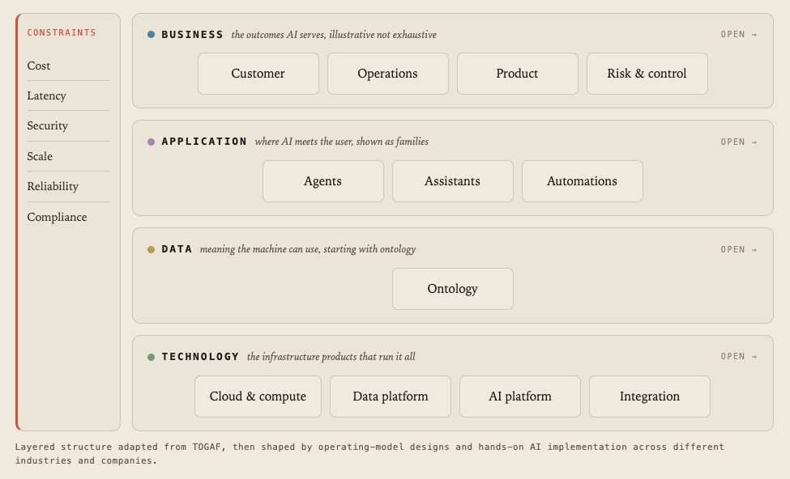
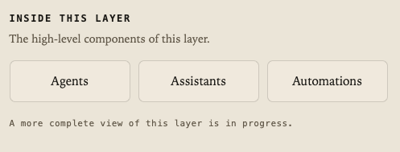
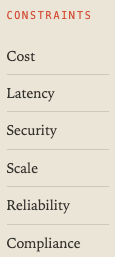
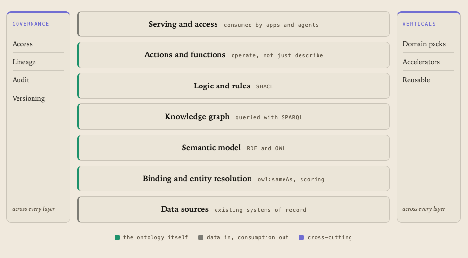

Every company now has AI initiatives. Few have a map from the business outcome they want to the platform that would actually deliver it. Between intent and production sits a stack of decisions, and most teams meet them one tool at a time, out of order. The Capability Model is my answer to that: one layered map of what a business needs to take AI from intent to production, and how each layer depends on the one beneath it.
A model, not a checklist
A maturity chart ranks you, level one to level five, as if progress were a single line. A capability model does something different. It shows what has to exist for AI to reach production, arranges those capabilities into layers, and makes the dependencies visible. You read it top down, from the outcome the business wants to the infrastructure that runs it, and at every step the question is the same: what must be true here for the layer above to stand.

Four layers, read top down, from the business outcome to the platform that runs it.
It is not a generic maturity ladder, and it is not finished. Like everything I publish, it is a working model, a map I keep reshaping as the field moves and as new implementation patterns show up in real work.
Four layers, one reading
The model has four layers, and each one answers to the layer above and leans on the layer below. Business is the top: the outcomes AI is supposed to serve, customer, operations, product, risk and control, illustrative and never exhaustive. Application is where AI meets the person who uses it, shown as families rather than products: agents, assistants, automations. Data is where meaning lives, the layer that turns records into something a machine can reason over. Technology is the floor: the cloud, the data platform, the AI platform, and the integration that runs all of it.

Open any layer and the capabilities inside it appear.
The point of the layering is not tidiness. It is that a failure travels upward. If the data layer does not know what a customer is, no agent above it can act on one, however good the model. The map makes that dependency impossible to ignore, which is exactly what a slide of disconnected boxes lets you do.
What cuts across
Some things refuse to sit in a layer. Cost, latency, security, scale, reliability, compliance, these bound every layer at once, and treating them as a footnote is how production systems fail in their second year. So the model gives them their own place, a band that runs across all four layers, named as first-class concerns rather than assumed.

Six constraints. They do not live in a layer, they cut through all of them.
This is the part a capability map gets right and a feature list gets wrong. A demo answers the question once. A constraint is the same question asked again under load, under audit, under a budget. Naming the six of them up front is the difference between a thing that works in a meeting and a thing that works in production.
Where it goes deepest
One layer carries more weight than the rest, and it is the one most roadmaps skip: data, and inside it, the ontology. Models are fluent in language and blind to meaning. Most systems store records; the ontology stores what those records mean and how they relate, so software and people reason over one shared model. Read from the bottom up, it is a single path: data sources, then binding and entity resolution so the same real-world thing becomes one object, then a semantic model in open standards, then a knowledge graph you can query, then logic and rules that validate and derive, then actions that let the model operate and not just describe, and finally serving, where apps and agents consume it.

The data layer, read bottom up: sources become meaning, meaning becomes something you can act on.
This is where I spend most of my depth, because it is the layer everything above inherits. Get it wrong and the confusion is passed up, silently, to every agent and every dashboard. Get it right and the rest gets easier than it has any right to be. The public model stops at the shape of this layer; the detailed implementation is its own, longer story.
Why this, and why in public
The skeleton is borrowed honestly: the layering is adapted from TOGAF, then reshaped by operating-model design and by hands-on AI implementation across different industries. I did not invent the idea of layers. What I am adding is a specific reading of how they apply to AI, where the dependencies actually bite, and which constraints decide whether any of it survives contact with production.
It is a work in progress and a study in public, the same as the Atlas. It will be wrong in places and it will change. I publish it because the thinking is the contribution: the deepest detail can stay private and the map can still be useful, to me for keeping the whole shape in my head, and to anyone trying to get from an AI intent to something that actually runs. The map is the argument.
Hoje toda empresa tem iniciativas de IA. Poucas têm um mapa que vá do resultado de negócio que querem até a plataforma que de fato o entregaria. Entre a intenção e a produção existe uma pilha de decisões, e a maioria dos times as encontra uma ferramenta de cada vez, fora de ordem. O Modelo de Capacidades é a minha resposta a isso: um mapa em camadas do que um negócio precisa para levar a IA da intenção à produção, e de como cada camada depende da que está abaixo dela.
Um modelo, não um checklist
Um gráfico de maturidade te classifica, do nível um ao cinco, como se o progresso fosse uma linha só. Um modelo de capacidades faz algo diferente. Ele mostra o que precisa existir para a IA chegar à produção, organiza essas capacidades em camadas, e torna as dependências visíveis. Você o lê de cima para baixo, do resultado que o negócio quer até a infraestrutura que o executa, e em cada passo a pergunta é a mesma: o que precisa ser verdade aqui para a camada de cima se sustentar.
Quatro camadas, lidas de cima para baixo, do resultado de negócio à plataforma que o executa.
Não é uma escada genérica de maturidade, e não está pronto. Como tudo que eu publico, é um modelo em andamento, um mapa que eu sigo remodelando conforme o campo se move e conforme novos padrões de implementação aparecem no trabalho real.
Quatro camadas, uma leitura
O modelo tem quatro camadas, e cada uma responde à camada de cima e se apoia na de baixo. Negócio é o topo: os resultados que a IA deve servir, cliente, operações, produto, risco e controle, ilustrativos e nunca exaustivos. Aplicação é onde a IA encontra a pessoa que a usa, mostrada como famílias em vez de produtos: agentes, assistentes, automações. Dados é onde mora o significado, a camada que transforma registros em algo sobre o que uma máquina possa raciocinar. Tecnologia é o chão: a nuvem, a plataforma de dados, a plataforma de IA, e a integração que roda tudo isso.
Abra qualquer camada e as capacidades dentro dela aparecem.
O sentido das camadas não é arrumação. É que uma falha sobe. Se a camada de dados não sabe o que é um cliente, nenhum agente acima dela consegue agir sobre um, por melhor que seja o modelo. O mapa torna essa dependência impossível de ignorar, que é exatamente o que um slide de caixas soltas permite fazer.
O que atravessa tudo
Algumas coisas se recusam a morar em uma camada. Custo, latência, segurança, escala, confiabilidade, conformidade, elas limitam todas as camadas ao mesmo tempo, e tratá-las como nota de rodapé é como sistemas de produção falham no segundo ano. Então o modelo lhes dá um lugar próprio, uma faixa que corre por todas as quatro camadas, nomeadas como preocupações de primeira classe em vez de presumidas.
Seis restrições. Elas não moram em uma camada, atravessam todas.
Essa é a parte que um mapa de capacidades acerta e uma lista de funcionalidades erra. Uma demo responde a pergunta uma vez. Uma restrição é a mesma pergunta feita de novo sob carga, sob auditoria, sob um orçamento. Nomear as seis logo de início é a diferença entre uma coisa que funciona numa reunião e uma coisa que funciona em produção.
Onde ele vai mais fundo
Uma camada carrega mais peso do que as outras, e é a que a maioria dos roadmaps pula: dados, e dentro dela, a ontologia. Os modelos são fluentes em linguagem e cegos para o significado. A maioria dos sistemas guarda registros; a ontologia guarda o que esses registros significam e como se relacionam, para que software e pessoas raciocinem sobre um único modelo compartilhado. Lida de baixo para cima, é um caminho só: fontes de dados, depois vínculo e resolução de entidade para que a mesma coisa do mundo real vire um único objeto, depois um modelo semântico em padrões abertos, depois um grafo de conhecimento que você pode consultar, depois lógica e regras que validam e derivam, depois ações que deixam o modelo operar e não só descrever, e por fim o serviço, onde apps e agentes a consomem.
A camada de dados, lida de baixo para cima: fontes viram significado, significado vira algo sobre o que se pode agir.
É aqui que eu invisto a maior parte da minha profundidade, porque é a camada que tudo acima herda. Erre aqui e a confusão sobe, em silêncio, para cada agente e cada painel. Acerte e o resto fica mais fácil do que tem o direito de ser. O modelo público para na forma desta camada; a implementação detalhada é uma história própria, mais longa.
Por que isto, e por que em público
O esqueleto é emprestado com honestidade: a estrutura em camadas é adaptada do TOGAF, depois remodelada por desenho de modelo operacional e por implementação prática de IA em diferentes indústrias. Eu não inventei a ideia de camadas. O que eu acrescento é uma leitura específica de como elas se aplicam à IA, de onde as dependências realmente mordem, e de quais restrições decidem se algo disso sobrevive ao contato com a produção.
É um trabalho em andamento e um estudo em público, igual ao Atlas. Vai estar errado em alguns pontos e vai mudar. Eu publico porque o pensamento é a contribuição: o detalhe mais profundo pode ficar privado e o mapa ainda ser útil, para mim, para segurar a forma inteira na cabeça, e para qualquer um tentando sair de uma intenção de IA para algo que de fato roda. O mapa é o argumento.
Hoy toda empresa tiene iniciativas de IA. Pocas tienen un mapa que vaya del resultado de negocio que quieren hasta la plataforma que de verdad lo entregaría. Entre la intención y la producción hay una pila de decisiones, y la mayoría de los equipos las encuentra una herramienta a la vez, fuera de orden. El Modelo de Capacidades es mi respuesta a eso: un mapa en capas de lo que un negocio necesita para llevar la IA de la intención a la producción, y de cómo cada capa depende de la que está debajo.
Un modelo, no una checklist
Un gráfico de madurez te clasifica, del nivel uno al cinco, como si el progreso fuera una sola línea. Un modelo de capacidades hace algo distinto. Muestra qué tiene que existir para que la IA llegue a producción, ordena esas capacidades en capas, y hace visibles las dependencias. Se lee de arriba hacia abajo, del resultado que el negocio quiere hasta la infraestructura que lo ejecuta, y en cada paso la pregunta es la misma: qué debe ser verdad aquí para que la capa de arriba se sostenga.
Cuatro capas, leídas de arriba hacia abajo, del resultado de negocio a la plataforma que lo ejecuta.
No es una escalera genérica de madurez, y no está terminado. Como todo lo que publico, es un modelo en construcción, un mapa que sigo remodelando a medida que el campo se mueve y aparecen nuevos patrones de implementación en el trabajo real.
Cuatro capas, una lectura
El modelo tiene cuatro capas, y cada una responde a la capa de arriba y se apoya en la de abajo. Negocio es la cima: los resultados que la IA debe servir, cliente, operaciones, producto, riesgo y control, ilustrativos y nunca exhaustivos. Aplicación es donde la IA encuentra a la persona que la usa, mostrada como familias en vez de productos: agentes, asistentes, automatizaciones. Datos es donde vive el significado, la capa que convierte registros en algo sobre lo que una máquina pueda razonar. Tecnología es el suelo: la nube, la plataforma de datos, la plataforma de IA, y la integración que lo ejecuta todo.
Abre cualquier capa y las capacidades dentro de ella aparecen.
El sentido de las capas no es orden estético. Es que una falla sube. Si la capa de datos no sabe qué es un cliente, ningún agente por encima puede actuar sobre uno, por bueno que sea el modelo. El mapa hace esa dependencia imposible de ignorar, que es exactamente lo que una diapositiva de cajas sueltas permite hacer.
Lo que atraviesa todo
Algunas cosas se niegan a vivir en una capa. Costo, latencia, seguridad, escala, fiabilidad, cumplimiento, limitan todas las capas a la vez, y tratarlas como nota al pie es como los sistemas de producción fallan en su segundo año. Por eso el modelo les da un lugar propio, una franja que recorre las cuatro capas, nombradas como preocupaciones de primera clase en vez de asumidas.
Seis restricciones. No viven en una capa, atraviesan todas.
Esta es la parte que un mapa de capacidades acierta y una lista de funcionalidades falla. Una demo responde la pregunta una vez. Una restricción es la misma pregunta hecha de nuevo bajo carga, bajo auditoría, bajo un presupuesto. Nombrar las seis desde el inicio es la diferencia entre algo que funciona en una reunión y algo que funciona en producción.
Dónde va más profundo
Una capa carga más peso que las demás, y es la que la mayoría de los roadmaps salta: datos, y dentro de ella, la ontología. Los modelos son fluidos en lenguaje y ciegos al significado. La mayoría de los sistemas guardan registros; la ontología guarda lo que esos registros significan y cómo se relacionan, para que software y personas razonen sobre un único modelo compartido. Leída de abajo hacia arriba, es un solo camino: fuentes de datos, luego vínculo y resolución de entidad para que la misma cosa del mundo real se vuelva un único objeto, luego un modelo semántico en estándares abiertos, luego un grafo de conocimiento que puedes consultar, luego lógica y reglas que validan y derivan, luego acciones que dejan al modelo operar y no solo describir, y por fin el servicio, donde apps y agentes la consumen.
La capa de datos, leída de abajo hacia arriba: las fuentes se vuelven significado, el significado se vuelve algo sobre lo que actuar.
Aquí es donde invierto la mayor parte de mi profundidad, porque es la capa que todo lo de arriba hereda. Equivócate aquí y la confusión sube, en silencio, a cada agente y cada panel. Acierta y el resto se vuelve más fácil de lo que tiene derecho a ser. El modelo público se detiene en la forma de esta capa; la implementación detallada es una historia propia, más larga.
Por qué esto, y por qué en público
El esqueleto está prestado con honestidad: la estructura en capas está adaptada de TOGAF, luego remodelada por diseño de modelo operativo y por implementación práctica de IA en distintas industrias. No inventé la idea de capas. Lo que agrego es una lectura específica de cómo aplican a la IA, dónde las dependencias de verdad muerden, y qué restricciones deciden si algo de esto sobrevive al contacto con la producción.
Es un trabajo en construcción y un estudio en público, igual que el Atlas. Estará equivocado en algunos puntos y cambiará. Lo publico porque el pensamiento es la contribución: el detalle más profundo puede quedarse privado y el mapa seguir siendo útil, para mí, para sostener la forma entera en la cabeza, y para cualquiera que intente pasar de una intención de IA a algo que de verdad funciona. El mapa es el argumento.